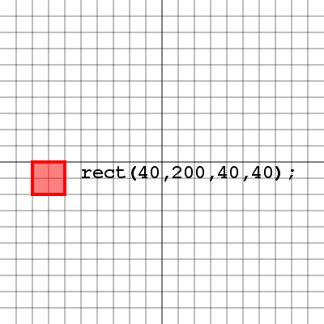
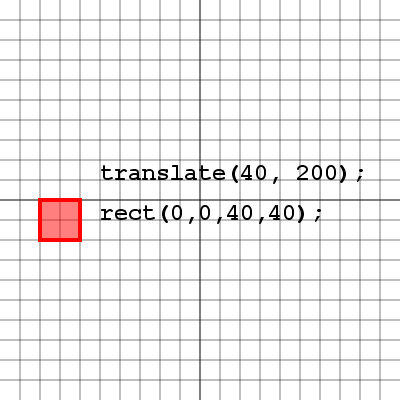
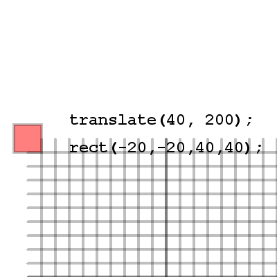
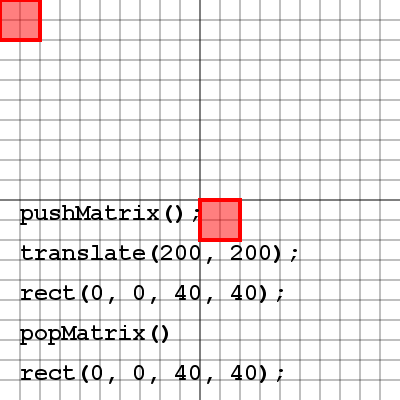

Transformations
Reading
- Transforms (required)
- Basics (required: transform section)
- Learning Processing: Chapter 1 + 2 (recommended)
"The universe is transformation; our life is what our thoughts make it. [Marcus Aurelius]"
Drawing Directly
We can always draw our shapes where we want them to appear on the screen, and for the most part there's nothing wrong with that. Here's an example of a rectangle drawn with it's top left corner at (40, 200), with a width and height of 40 pixels. Now how would we go about rotating or scaling this rectangle? Let's take a look.
Notice that our rectangle has been rotated by 45 degrees, however it's entire location has been rotated as well. This is because when the rotate( angle ) method is used in processing, it doesn't rotate the objects, it rotates the whole screen. So our rectangle drawn at (40, 200) has been moved due to the rotation of the screen. Let's take a look at what this screen rotation looks like.
Here we've rotated the grid as well as the square so it's clear to see how the square ended up where it did inside the window. Notice that relative to the grid, which is now also rotated, the square is in fact drawn with it's top left corner at (40, 200). There is an issue with drawing our shapes this way though, since we don't know where the rectangle actually is with respect to the screen, we don't have control over our rectangles location, and more advanced topics like collision detection will become extremely messy with our shapes spinning all over the screen like this.
Translation
Let's say we wanted to have our shape in the same location, but instead of drawing our shape there we first moved the paper to the location (40, 200), so that when we drew our shape at the location (0, 0) it would appear at (40, 200). The following commands do exactly that. The translate( x, y ) method will move the entire screen and everything drawn after it. Let's take a closer look at how the screen moves.
See how the grid has actually moved in this image. The grid represents our drawing area in processing, which means the top left corner of the grid actually represents (0, 0) for anything drawn on it. So when we move the screen by translating, we actually move the processing drawing area and everything drawn after it will be relative to the drawing area's new location.
This example shows we can actually draw some items in negative numbers. Remember that we always draw our rectangles from the top left corner and with a width and height, so by making the top left corner negative coordinates half the width and the height of the rectangle, we're able to place the rectangles center at (0, 0). If we always know that my rectangle will be centered at the location we are translating to, then we can be assured that we know where it is at all times.
Rotation and Scale
Let's take a look at the example where we drew our rectangle around the point (0, 0) instead of using (0, 0) as the top left corner of the rectangle. Why would we want our rectangle centered around (0, 0) and what's so special about it? Well imagine we wanted to rotate our rectangle. If the rectangle has it's top left corner at (0, 0) the rectangle will swing around this point. But if our rectangle is centered over (0, 0) and we rotate the screen, we will spin our rectangle on the spot and it's center will remain the same. Take a look.
So the center of our rectangle has not changed, however it's been rotated. The blue rectangle represents our rectangle that was drawn with it's top left corner at (0, 0). Notice how unlike the red rectangle which is centered at (0, 0) the blue rectangle tends to swing around it's top left corner. That is because when the rotate method is called the screen in processing actually rotates around this (0, 0) point. Let's take a look at how things scale.
Here we see that our shape has been scaled by a factor of 2. This means that the coordinates in the processing drawing area are also scaled by a factor of 2. So if we decided to move our rectangle on this grid, each move would actually be double what we specified. For example, a rectangle drawn at (40, 40) is shown in blue. The blue rectangle is clearly no where near the point (40, 40) if we're looking at the original drawing area with the top left corner at (0, 0). This is where translation, rotation and scale can be a little tricky.
Push and Pop Matrix
There is a problem with translating to a location to draw each shape, how do we get back to (0, 0) so we can translate to another location to draw a different shape. The answer is: we call the pushMatrix() method to save all of our translation, rotation and scale information, and when we are finished we call popMatrix() to return us back to (0, 0) with no rotation and no scale. Take a look at the image and try to figure out how the same call to the rect method is drawing the rectangle in two different locations.
The following example should give you some practice with the push and pop matrix methods. Try commenting out some of the calls to push and pop matrix and see what happens.